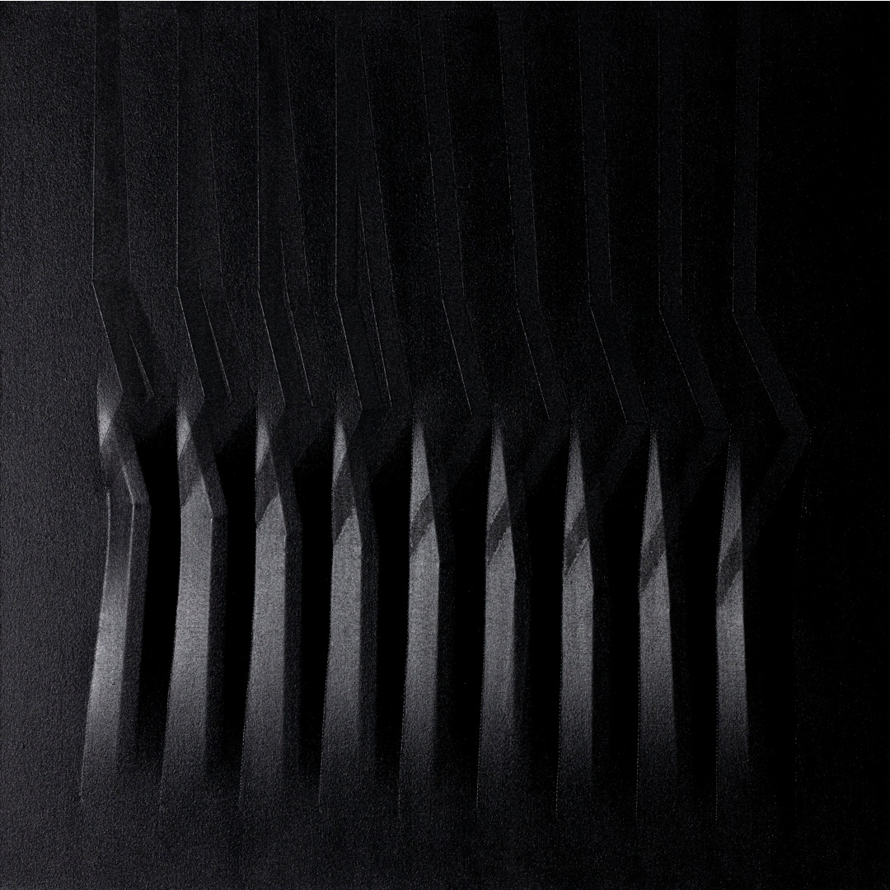

Agostino Bonalumi (Vimercate, 10 luglio 1935- Desio, 18 settembre 2013) è stato una figura chiave nello sviluppo dell'arte ottica-cinetica durante il XX secolo. La sua ricerca artistica si è focalizzata sull'interazione tra spazio, forma e colore, portandolo a sviluppare delle opere caratterizzate dall'idea di uscire dalla concezione di bidimensionalità della tela. Bonalumi in gioventù intraprese studi di disegno tecnico e meccanico, che influenzarono profondamente il suo approccio metodico e analitico all'arte. Già da giovanissimo inizia ad essere invitato in diverse mostre internazionali prestigiose ad esporre le sue opere, cosa che nel corso della sua carriera lo porterà a viaggiare molto e ad incontrare molti artisti dalle tendenze simili alle sue. Tali legami si rivelarono molto produttivi, tanto che negli anni ‘60 fonderà assieme a Piero Manzoni ed Enrico Castellani a fondare la rivista d’arte sperimentale Azimuth. Bonalumi continuò ad essere attivo fino alla sua scomparsa avvenuta nel 2013.

Come è di regola all'interno di questa corrente, il soggetto è completamente astratto ed è stato concepito più come un mezzo per produrre nella tela un determinato effetto ottico. Il suo autore, di nome Agostino Bonalumi, è noto per il suo stile artistico peculiare e questo quadro ne fornisce un chiaro esempio. L'opera è dotata di molteplici cunei accuratamente posizionati al di sotto della tela e disposti in più segmenti paralleli, in modo da produrre un effetto tridimensionale mediante un’adeguata fonte di luce. L’opera è frutto della continua sperimentazione di Bonalumi con la tridimensionalità e i colori. Più precisamente, è stata composta durante un periodo nel quale Bonalumi aveva spostato la sua attenzione da figure ondulate e tondeggianti verso delle figure seghettate e più “dure”.